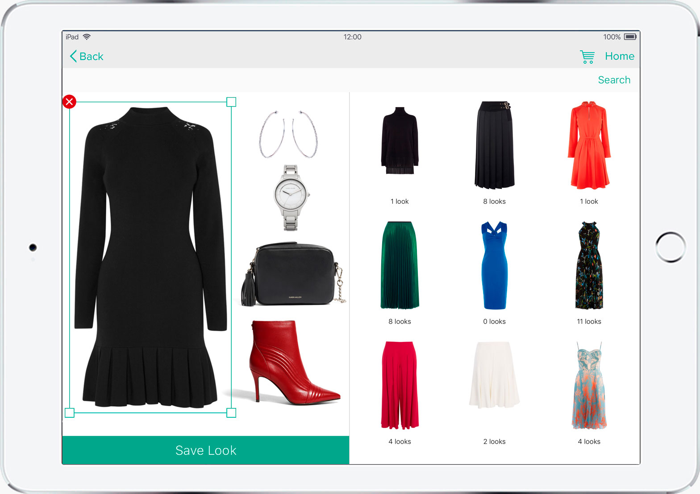

«Если вы работаете над тем, что для вас действительно важно,
вас не приходится подгонять. Вас тянет вперед ваша мечта», —
Стив Джобс.

«Отправной точкой всех достижений является желание», —
Наполеон Хилл.

«Избегайте тех, кто пытается подорвать вашу веру в себя. Эта
черта свойственна мелким людям. Великий человек, наоборот,
внушает вам чувство, что и вы можете стать великим», — Марк
Твен.

Ребята, мне очень нравится это тесовое задание, оно реально
интересное и разнообразное))) Для меня очень важно работать
с таким профессионалами как Вы))) Я верю, что с Вами и я
могу стать таким же профессионалом, влюбленным в свою
профессию! И верю, что вы не пожалеете, если поверите в
меня))) 😉